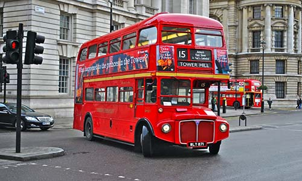
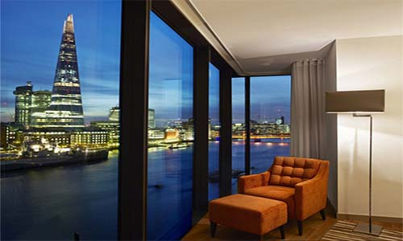

Coneix una mica més Londres amb aquestes recomanacions:
Història
Aquesta ciutat va aparèixer després de la conquista romana, al segle III. Londinium era un important nucli de població amb uns 500.000 habitants.
Arruïnada per les invasions “Anglosaxones” (foren les tribus germàniques que envaïren el sud i l'est de la Gran Bretanya al començament del segle V) del segle V, al segle VII es va convertir en la capital del regne Essex.
Al segle IX va sofrir incursions escandinaves, així va fomentar l’esperit d’empresa i de comerç, la que la va convertir en el primer centre urbà del país. En 1911 la ciutat es va constituir com a municipi i l’any 1215 van tenir el privilegi d’elegir el seu alcalde cada any.
A partir del segle XIII, Westminster, lloc a prop de Londres, es va convertir en una de les principals sedes del Govern. A partir d’aquests successos va augmentar el comerç europeu i Londres es va convertir en la capital del regne.
Com arribar
Avió:
Els viatgers que provenen de llatinoamerica poden trobar vols directes des de les seves capitals o bé poden trobar vols a millor preu fent escala en Madrid.Els viatgers que provenen d’Europa poden trobar més vols de baix cost, ja que hi ha una gran quantitat de visitants.
Aeroport Heathrow: és el principal aeroport de Londres i el que més tràfic aeri te en l’àmbit europeu.
Aeroport Gatwick: és el segon major aeroport de Londres.
Aeroport Luton: és un petit aeroport situat a 51 quilòmetres de Londres.
Aeroport Stansed: es un petit aeroport situat a 56 quilòmetres de Londres.
Tren:
Una altra manera d’arribar a Londres és amb tren.Els viatgers que provenen des d’Espanya primer haureu d’arribar a París, després hi ha dues rutes, una des de Madrid (parades en Valladolid, Burgos i Vitòria) i un altre de Barcelona (parades en Girona i Figueres).
Vaixell:
La companyia Britanny Ferries ofereix tres rutes marítimes entre Espanya i Anglaterra: Bilbao-Portsmouth, Santander-Portsmouth i Santander-Plymouth. La millor opció és arribar a Portsmouth, ja que està situat a tan sols 120 quilòmetres de Londres.
Cotxe:
Per arribar fins a Anglaterra en cotxe és creuar França fins a arribar a Calais, una vegada allà agafar e’l’Eurotúnel fins a Dover. Aquesta opció és costosa i poc recomanable, ja que a Anglaterra es condueix per l’esquerra i és molt més còmode desplaçar-se amb transport públic.
Transport
El transport públic a Londres té un preu bastant elevat, és la destinació on major diferencia trobarem respecte a altres capitals.
Metro:
El metro de Londres compte amb 11 línies i la seva xarxa és una de les més extenses del món.
Autobús
Encara que no és el transport més ràpid, aquests autobusos de dos pisos són una forma bonica de visitar Londres.

Taxi:
Els taxis al Regne Unit són grans, còmodes, elegants i molt cridaners.
Bicicleta:
Malgrat que el clima de Londres no és el més favorable, són molts els londinencs que opten per la bicicleta per desplaçar-se per la ciutat.
Allotjament
Encara que és difícil trobar allotjament a bon preu i assequible, anem a veure les millors ofertes i zones per dormir. De la mateixa manera que hi ha altres ciutats, a Londres existeix el Bed and Breakfast (Llit i esmorzar). Aquests allotjaments són cases tradicionals que ofereixen allotjament, tenen un ambient familiar i és habitual que els propietaris visquin en elles.
Hotels a Londres:
- El preu dels hotels a Londres és elevat, si voleu dormir en un lloc decent, haureu de desemborsar unes 90 llibres per nit.
Per trobar les millors ofertes i trobar bons descomptes de fins al 75% us recomanem reservar a HotelesBaratos.com, trobareu el preu mínim garantit en tots els hotels.
Si voleu que la visita sigui una experiència en si mateixa, no us perdeu aquesta selecció d’hotels a hotelesconencanto.com.
Apartaments a Londres:
Els apartaments turístics estan tenint cada vegada millor adaptació i suposen una alternativa per als hotels. Podeu reservar els apartaments al millor preu a apartamentosbaratos.com.

Hostals i Albergues a Londres:
Els preus dels albergues a Londres també són relativament elevats, una cama amb habitació compartida ronda les 15 lliures. Els hostals més freqüentats pels joves són: The Generator, Globetrotter Inn i Picadilly Backpackers. Podeu trobar albergues en hostelworld.com.
Gastronomia
Encara que Londres sigui una de les ciutats més cares del món, el preu dels restaurants és assequible, no cal deixar-se una fortuna per menjar bé. Per calcular un cost aproximat, el que a Espanya costaria 10 euros a Londres poden ser aproximadament 10 liures.
A Londres es poden trobar una gran quantitat d’establiments de menjar ràpid: les hamburgueseries, els kebabs i pizzeries, són fàcils de localitzar en qualsevol lloc de la ciutat.
Plats Típics
- Fish and chips: peix (normalment lluç) arrebossat i fregit acompanyat de patates fregides. És el plat més típic de Londres.
- Roast Beef: vedella a la brasa.
- Steak and kidney pie: pastís farcit de vedella i ronyons.
- Yorkshire pudding: hòstia (tros prim de pa àzim que el sacerdot consagra a la missa) de massa fornejada amb forma de bol.
- Banked Beans: torrada de mongetes.
- Apple Pie: pastís de poma calenta.

Horaris:
- Encara que els londinenses tenen la costum de menjar i sopar més aviat del que estem acostumats a Espanya, els restaurants de la capital estan adaptats al turisme, especialment al barri de Soho, on es poden trobar restaurants oberts les 24 hores.
Llocs d’interès turístic
Big Ben
- El rellotge de les Cases del Parlament, conegut com a Big Ben, es una de les imatges més famoses de Londres, a més a més es un dels principals símbols de la ciutat.
- La torre va ser construïda a l’any 1858, constitueix un edifici de 106 metres d’altura construït amb un estil gòtic que alberga quatre enorme rellotges situats en les seves cares.
- El rellotge de la Torre del Big Ben, compost per un rellotge de 7 metres de diàmetre en cada en cada una de les seves cares, va ser posat en marxa el maig de 1859. Avui en dia s’ha convertit en un símbol de la nació i les seves campanades son transmitides a diari per la cadena de la BBC.
Palau Westminster:
- El Palau de Westminster, també conegut com les Cases del Parlament, és un edifici gòtic victorià que alberga les dos càmeres que componen el Parlament Britànic.
- L’Octubre de 1834, un assolador incendi va destruir l’antic palau que havia allotjat al Parlament des de 1512. De l’antic palau només es va poder salvar una mínima part.
- Temps després es van presentar 97 projectes per a la construcció del nou edifici, els guanyadors van ser els arquitectes Charles Barry i Augustus Welby Pugin. En 1847 l’edifici és veia pràcticament terminat amb la construcció de 1.200 d’habitacions, 11 patis i 3,5 quilòmetres de passadissos.
- L’ostentosa façana de l’edifici ofereix un bell panorama mentre, els pinacles daurats i les estàtues dels reis es reflecteixen al riu. El palau es troba al costat de la Victoria Tower i de la torre Big Ben.

Abadia de Westminster:
- L’Abadia de Westminster és el temple més antic de Londres. Aquesta abadia acull les tombes dels monarques i figures històriques britàniques dels últims mil anys.
- L’abadia, construïda amb estil romànic, va ser consagrada l’any 1065 per donar allotjament als monjos benedictins. Entre 1245 i 1517 va ser reconstruïda amb un estil gòtic i durant el segle XVIII va sofrir la seva major transformació, després de la construcció de les dues torres de l’entrada principal.
- Tot i que l’abadia va ser confiscada per Enrique VIII durant la dissolució dels monestirs en1534 i clausurada en 1540, es va salvar de ser destruïda gràcies a què es trobava sota el control directe de la Corona d’Anglaterra, fora de la jurisdicció de l’església.
- Als murs de l’abadia es guarden alguns dels millors exemples de l’arquitectura medieval londinenca. Amb una important col·lecció de tombes i mausoleus de grans personalitats britàniques.
- Lady Chapel: Una de les capelles més importants de l’abadia, Lady Chapel, conserva un bonic sostre i un cadirat del cor des de l’any 1512.
- El racó dels poetes: Aquest alberga les tombes i mausoleus de grans genis de la literatura com Charles Dickens, William Shakespeare, Geoffrey Chaucer, Samuel Jhonson i Rudyard Kipling.
- Tron de Sant Eduard: Aquest tron data del segle XI, és el mateix en el qual se sentin els sobirans per a ser coronats per l’Arquebisbe de Canterbury.
- Claustres: Els preciosos claustres construïts entre els segles XIII i XIV uneixen l’església de l’abadia amb la resta de les dependències.
- Sala Capitular: La sala encara conserva els sòls de mosaic del segle XIII.
- Collage Garden: Aquest parc amb més de 900 anys d’antiguitat, és el parc més antic d’Anglaterra.
Picadilly Circus:
- La plaça Picadilly Circus és el lloc triat per molts londinencs i turistes com a punt de trobada gràcies a la seva situació i a l’enorme gran oferta d’oci a la zona.
- La plaça es coneguda pels seus cartells lluminosos i la font d’Eros situada al centre. Aquesta plaça disposa d’una gran quantitat de botigues, cinemes i teatres. Picadilly Circus és un dels llocs més animats de Londres i una de les principals zones de festa de la ciutat.
- Aquesta plaça es recomana visitar-la de nit, quan les llums de neó fan brillar la zona convertint-la en un lloc encara més especial. A part de tot aixo es recomana fer una visita al Trocadero, una enorme sala de màquines repleta de tot tipus de jocs.
Torre de Londres:
- Aquesta torre va ser construïda sota el regnat de Guillem I, la Torre de Londres va ser sinònim de terror pel fet de que es tractava del lloc en el qual eren tancats tots aquells que ofenien al monarca. La majoria dels presos van malviure en condicions espantoses i no van sortir amb vida, o van ser torturats abans de ser executats. Van ser molts els personatges de gran rellevància que van tenir la desgràcia de patir entre les parets de la Torre de Londres, entre els quals es van incloure reis enderrocats, aristòcrates i clergues acusats de traïció. Alguns dels executats van ser la reina consort Anna Bolena, la reina Jane Grey, el baró William Hastings, o el pensador i escritor Thomas More.
- La Torre de Londres es un lloc carregat d’ historia i de moments apassionants, cosa que la converteix en una de les visites obligatòries de Londres. A l’interior hi ha diversos edificis que es poden recórrer pel que convé dedicar diverses hores a la visita.
British Museum:
- El museu britànic de Londres es un dels més antics del món, una de les col·leccions de antiguitats més grans i famoses que existeixen.
- Aquest museu te més de set milions de objectes procedents de tots els continents. El museu es tan gran que per visitar-lo sencer seria necessari més d’un dia, però per veure lo més important, en un matí es suficient.
- Una de les parts que val la pena destacar es el Gran Atri situat al centre del museu, un immens espai amb una coberta de vidri en el que es troba la sala de lectura de la Biblioteca Britànica.
Al llarg del recorregut es possible trobar qualsevol tipus d’objecte, des de porcellana xina, fins a antiguitats prehistòriques i medievals, o monedes i medalles de diferents períodes. Les parts més cridaneres son las de la secció de l’Antic Egipte i la de la l’Antiga Grècia.
Madame Tussauds Londres:
- Aquest museu exposa les figures de personatges famosos realitzats en cera. La seva qualitat i innovació el van convertir en el museu de cera més prestigiós del món.
- El museu es va inaugurar al 1884, el Madame Tussauds de Londres va ser el primer dels que posteriorment van existir per diferents llocs com Amsterdam, Bangkok, Berlín, Blackpool, Hollywood, Hong Kong, Las Vegas, Nueva York, Shangai, Washington i Viena.
- La escultora Marie Tussaud va establir la seva primera exposició de figures de cera a Londres l'any 1835, oferint l’entrada a sis penics.
Aquest museu té diferents seccions més importants:
- Festa VIP: a la primera sala del museu es celebra una festa en la qual els convidats són grans celebritats com Morgan Freeman, Leonardo DiCaprio, Nicole Kidman, Brad Pitt o Angelina Jolie.
- Zona d'esports: és tracta de la zona en la qual tenen algun dels grans esportistes com Tiger Woods o Mohammed Ali.
- Reialesa: aquí es troben alguns dels membres de la família reial com la Reina Isabel, el príncep Carles, etc.
- Cultura: en la zona de la cultura es reuneixen grans genis de tots el temps com William Shakespeare, Albert Einstein, Stephen Hawking, Pablo Picasso i Charles Darwin.
- Liders Mundials: aquesta zona reuneix els grans líders mundials com Barack Obama, Margaret Thatcher, Winston Churchill, Nicolas Sarkozy, Ronald Reagan, Tony Blair i Martin Luther King.
- Cambra dels horrors: es tracta d’una zona en la qual diferents actors intenten infondre terror als visitants.
- L'esperit de Londres a partir d’un dels taxis de l’atracció és possible viatjar a través del temps per reviure la història de Londres.
- Superherois de Marvel en 4D: alguns dels superherois més coneguts de la factoria Marvel uneixen les seves forces contra el mal en una entretinguda pel·lícula en 4D.
Les figures del museu estan realitzades amb tot tipus de detalls, mostrant una gran qualitat enfront de les figures d’altres museus de cera. Malgrat els seus excessius preus, al museu Madame Tussauds és un dels museus més visitats de Londres i sol haver-hi massa gent a qualsevol hora del dia. Per evitar les aglomeracions, el millor és tractar d’arribar a primera hora del dia o durant l’hora de menjar.